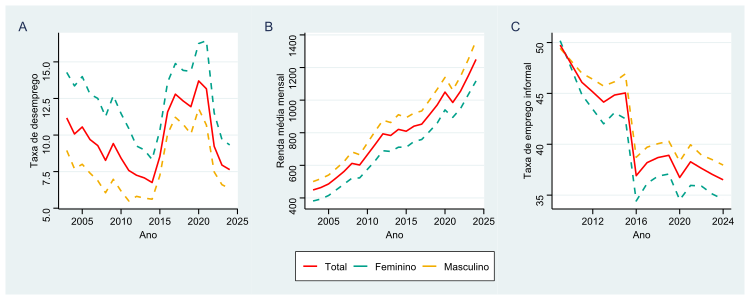
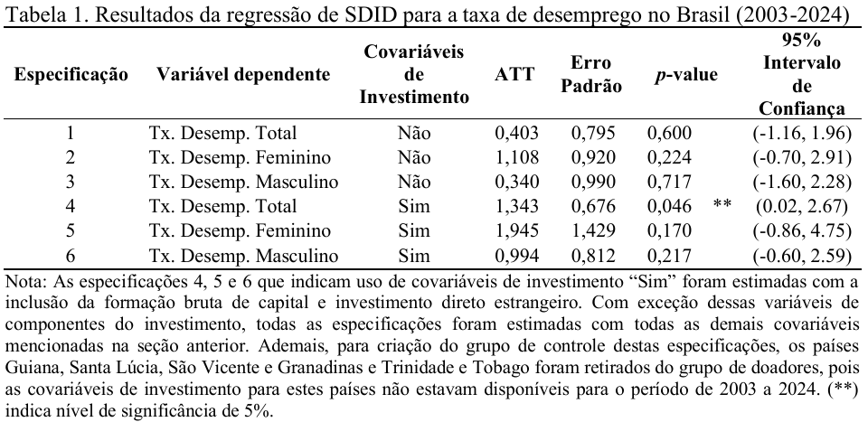
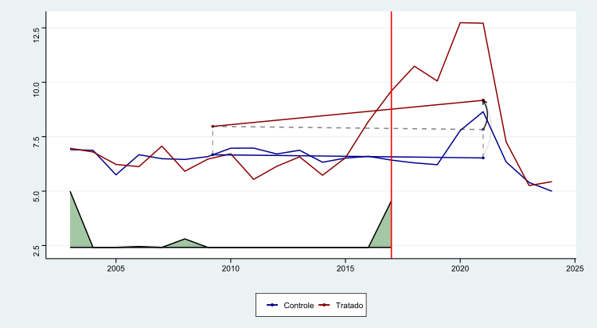
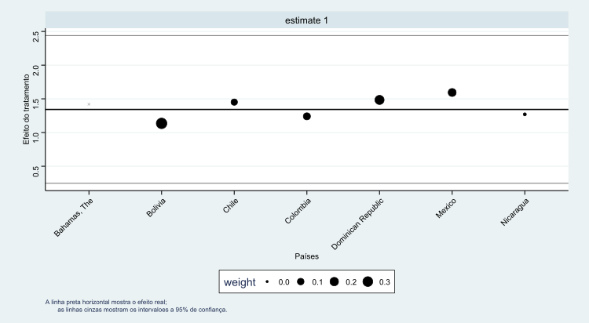
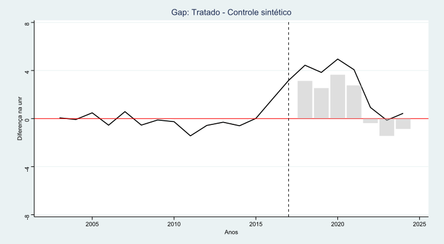
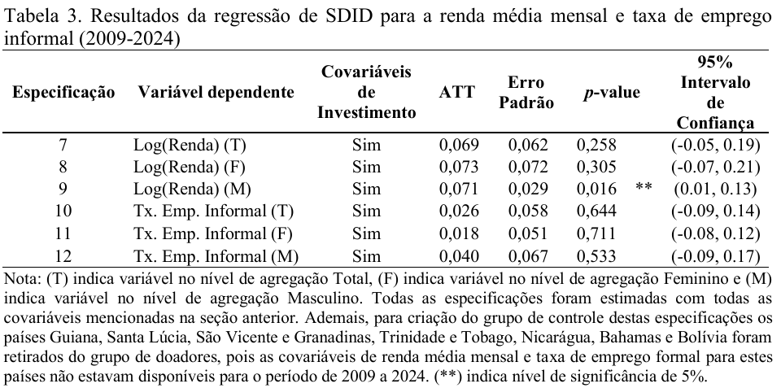

Uma análise através da metodologia de diferenças em diferenças sintético
A taxa de desemprego caiu para 5,1% (5,5 milhões), o menor nível da série histórica da Pnad Contínua do IBGE;
O nível de ocupação subiu para 59,1% (103 milhões);
Redução da taxa de informalidade de 39% em 2024, para 38,1% em 2025;
Remuneração média dos trabalhadores cresceu 5% em relação ao ano anterior, atingindo R$ 3.613.
A reforma trabalhista de 2017 contribuiu para estes resultados?
Estabelecer a prevalência do negociado sobre o legislado e reduzir a insegurança jurídica e litigiosidade.
Introduzir novos regimes como trabalho intermitente, teletrabalho e ampliação irrestrita da terceirização.
Aumentar a produtividade, gerar novos empregos e reduzir drasticamente a informalidade.
Objetivo Geral: Avaliar o impacto da reforma sobre a taxa de desemprego;
Objetivos Específicos: Estimar impactos na renda média mensal de trabalhadores formais e no nível de informalidade, com recortes por gênero.
Diagnóstico: O desemprego é causado pela rigidez dos salários e preços;
Solução: Flexibilização dos salários, dos regimes de contratação e da jornada de trabalho podem aumentar o nível de emprego;
Influência: Inspirado na teoria Neoclássica e em recomendações do FMI(2016).
Diagnóstico: O desemprego é resultado da falta de demanda efetiva;
Solução: Políticas fiscais expansivas e investimento público seriam os mecanismos corretos para gerar emprego;
Consequências: A flexibilidade salarial excessiva pode gerar incerteza e reduzir o consumo, agravando a crise em vez de resolvê-la.
| Eixo Temático | Descrição da Mudança | Crítica |
|---|---|---|
| Negociação Coletiva | Art. 611-A: Prevalência do acordado sobre o legislado. A Justiça do Trabalho (JT) passa a ter atuação limitada. | A JT fica restrita à análise de aspectos meramente formais dos acordos, fragilizando o conteúdo dos direitos e impedindo o controle de mérito sobre cláusulas possivelmente abusivas. |
| Jornada de Trabalho | Art. 59: Banco de horas individual(compensação em 6 meses); jornada 12x36 para todas as categorias; indenização apenas do tempo suprimido do intervalo (Art. 71). | Precarização do descanso e descaracterização do acordo de compensação, uma vez que horas extras habituais deixam de anular o regime de banco de horas. |
| Remuneração | Art. 457: Exclusão de abonos e prêmios da base salarial. Art. 461: Equiparação salarial restrita ao mesmo estabelecimento. | Gera perda de reflexos em encargos trabalhistas/previdenciários, resultando em uma piora na desigualdade funcional da renda e maior apropriação do excedente pelos empregadores. |
| Regimes de Trabalho | Criação do trabalho intermitente (Art. 443), terceirização da atividade-fim e a categoria do trabalhador hipersuficiente (diploma superior e salário >2x teto RGPS), cujos acordos individuais prevalecem sobre os coletivos. | Estímulo a vínculos instáveis que desestimulam o investimento em qualificação. A autonomia plena do hipersuficiente ignora a subordinação jurídica real. |
| Rescisão Contratual | Art. 484-A: Rescisão por acordo mútuo. Fim da homologação sindical obrigatória para contratos superiores a um ano. | Redução da multa do FGTS (20%) e exclusão do seguro-desemprego no acordo mútuo. O fim da conferência sindical amplia o risco de erros no cálculo de verbas e a insegurança jurídica. |
| Representação Sindical | Contribuição sindical facultativa. Art. 620: Acordos por empresa prevalecem sobre convenções de categoria. | Crise aguda de financiamento dos sindicatos e enfraquecimento do poder de barganha, descentralizando as negociações para níveis onde o trabalhador possui menor defesa coletiva. |
| Autor | Delimitação da Análise | Metodologia | Principais Resultados |
|---|---|---|---|
| Ottoni e Barreira (2021) | Impacto de longo prazo no desemprego. | Método de Controle Sintético (SCM) | Projeção de redução na taxa de desemprego entre -1,17 e -3,46 p.p. com maturação de 5 a 10 anos. |
| Serra, Bottega e Sanches (2022) | Impacto no desemprego nos três primeiros anos (curto prazo). | Método de Controle Sintético (SCM) | Inexistência de efeitos estatisticamente significantes sobre o desemprego no período avaliado (2018-2020). |
| Santos, Silva e Aragón (2025) | Avaliação da meta primária (desemprego) e dinâmicas subjacentes. | Modelo Dinâmico de Fator Latente Multinível (DM-LFM) | Efeito adverso: elevação média de 3 p.p. na taxa de desemprego entre 2018 e 2021. |
| Kohli (2025) | Impacto das contribuições sindicais facultativas na fiscalização e salários. | Diferenças em Diferenças Sintético (SDID) | Enfraquecimento sindical: redução de 0,9% nos salários e queda de 2,5% no nível de emprego formal. |
| Azevedo (2021) | Durabilidade do emprego e rotatividade laboral. | DiD e Modelos de Sobrevivência (Weibull) com dados da PNAD Contínua (2017-2018). | Impacto positivo na duração dos contratos (Aumento médio de 48 dias) e redução da probabilidade de saída do trabalhador (queda de 19% no risco de rescisão). |
| Oreiro et al. (2023) | Qualidade do emprego e estrutura ocupacional. | Aplicação do Índice de Qualidade do Emprego (EQI); análise de dados em painel para | Aumento da precariedade e informalidade; queda nos salários reais; o desemprego mostrou-se insensível à flexibilização, respondendo prioritariamente ao investimento. |
| Corbi et al. (2022) | Litigiosidade e incentivos aos processos trabalhistas. | Análise empírica (viés judicial) + Modelo de simulação (search-matching). | Queda acentuada no volume de processos judiciais na Justiça do Trabalho.A reforma teve um impacto positivo, reduzindo o desemprego em 1,7 p.p. ao diminuir a litigância. |
O que é: Uma combinação das metodologias de Diferenças em Diferenças (DID) e Controle Sintético (SCM) introduzida por Arkhangelsky et al. (2021);
Vantagens: Torna as tendências paralelas por construção através de reponderação de unidades e tempo, sendo mais robusto que os métodos isolados;
Aplicação: Uso de pesos para criar um “Brasil Sintético” (contrafactual) a partir de outros países;
Estimador de SDID:
\[ (\hat{\tau}^{sdid}, \hat{\mu}, \hat{\alpha}, \hat{\beta}) = \arg \min_{\tau, \mu, \alpha, \beta} \left\{ \sum_{i=1}^N \sum_{t=1}^T (Y_{it} - \mu - \alpha_i - \beta_t - W_{it} \tau)^2 \hat{\omega}_i^{sdid} \hat{\lambda}_t^{sdid} \right\} \qquad(1)\]
\[ Y_{it} = X_{it} \beta + \mu_i + \gamma_t + u_i \qquad(2)\]
\[ Y_{it}^{adj} = Y_{it} - X_{it} \hat{\beta} \qquad(3)\]
| Variável | Dependente | N | Média | Desvio Padrão | Mínimo | Máximo | Fonte |
|---|---|---|---|---|---|---|---|
| Tx. Desemp. (T) | Sim | 264 | 9,45 | 5,36 | 2,02 | 25,22 | WDI |
| Tx. Desemp. (F) | Sim | 264 | 10,74 | 5,52 | 2,70 | 28,46 | WDI |
| Tx. Desemp. (M) | Sim | 264 | 8,55 | 5,48 | 1,39 | 22,89 | WDI |
| Renda (T) | Sim | 264 | 807,67 | 294,71 | 411,48 | 1.945,67 | OIT |
| Renda (M) | Sim | 264 | 864,42 | 316,68 | 428,12 | 2.142,26 | OIT |
| Renda (F) | Sim | 264 | 754,89 | 257,21 | 354,14 | 1.711,91 | OIT |
| Emp. Informal (T) | Sim | 264 | 56,18 | 15,16 | 25,83 | 89,80 | OIT |
| Emp. Informal (M) | Sim | 264 | 57,18 | 15,02 | 25,27 | 87,87 | OIT |
| Emp. Informal (F) | Sim | 264 | 54,65 | 15,82 | 26,63 | 93,54 | OIT |
| Tx. Cresc. do PIB | Não | 264 | 3,53 | 7,11 | -24,36 | 63,33 | WDI |
| Tx. Inflação | Não | 264 | 5,41 | 12,11 | -27,63 | 174,86 | WDI |
| Tx. Câmbio Real | Não | 264 | 97,81 | 16,56 | 53,79 | 159,00 | WDI |
| Tx. Juros | Não | 264 | 7,88 | 10,93 | -58,33 | 54,68 | WDI |
| Pop. Urbana | Não | 264 | 1,01 | 1,25 | -4,20 | 3,52 | WDI |
| Ind. Est. Política | Não | 264 | -0,01 | 0,72 | -2,38 | 1,22 | WDI |
| Controle de Corrupção | Não | 264 | -0,00 | 0,80 | -1,39 | 1,54 | WDI |
| Tx. Part. da Força de Trabalho | Não | 264 | 63,91 | 5,35 | 49,63 | 78,70 | WDI |
| FBCF | Não | 264 | 23,13 | 4,38 | 11,02 | 33,60 | WDI |
| IDE | Não | 264 | 5,31 | 6,11 | -20,36 | 52,00 | WDI |
Nota: Valores baseados nos dados compilados da OIT e WDI.




| País | Peso |
|---|---|
| Bolívia | 0,361 |
| Rep. Dominicana | 0,249 |
| México | 0,170 |
| Colômbia | 0,125 |
| Chile | 0,091 |
| Nicarágua | 0,004 |
Curto Prazo: Nos primeiros quatro anos após a reforma, o impacto médio negativo foi de 3 p.p. na taxa de desemprego;
Inversão de Efeito: A partir de 2022, o efeito estimado torna-se negativo, sugerindo que a reforma pode ter ajudado a reduzir o desemprego apenas no longo prazo;
Discussão: Esse resultado pode indicar que os efeitos da reforma demoram a ser absorvidos ou que o mercado respondeu a outros estímulos de demanda agregada.


Agradeço ao CNPq pelo apoio a pesquisa.
Contatos: andre.barbato@ufabc.edu.br
XXXI Encontro Nacional de Economia Política